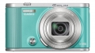

器材
党
全部器材
产品年表
名词百科
榜单
器材库
> 不可换镜头数码相机 > EX-ZR1800

卡西欧
EX-ZR1800
分类
不可换镜头数码相机
点评
0 条
图片
0 张
评测
0 篇
EX-ZR1800搭载1610万有效像素CMOS传感器、等效焦距为25-450mm的18倍光学变焦镜头。
产品类型
不可换镜头数码相机
综合评分
暂无评分
无忌评测
暂无评测
规格参数
网友点评
(0)
产品图 / 样片
(0)
评测文章
(0)
规格总览
发布日期
2017-02-09
影像规格
影像传感器
BSI-CMOS
影像传感器尺寸
1/2.3英寸
总像素
1679万
有效像素
1610万
静态图像格式
JPEG
静态图像尺寸
16M (4608x3456) 3:2 (4608x3072) 16:9 (4608x2592) 10M(3648x2736)3M (2048 x 1536)
短片格式
MOV
短片尺寸
FHD : 1920 x1080(30fps) /HD（1280x720 12fps/15fps/20fps/30fps)/ STD: 640x480(30fps) /HS : 224 x64(1000fps) / 224 x160(480fps) / 512x384(240fps) / 640x480 (120fps)/512x384(30-240fps)/640x480(30-120fps)
镜头和对焦
镜头结构
11片/10组
焦距
4.5mm-81.0mm
等效35mm画幅焦距
25mm-450mm
最大光圈
f/3.5-5.9
光学变焦
18倍
最近对焦距离
4cm
曝光控制
曝光模式
程序AE、光圈优先AE、快门速度优先AE、手动
曝光补偿
±2EV以1/3EV级调整
ISO感光度
静态图像：自动 / ISO 80 / ISO 100 / ISO 200 / ISO 400 / ISO 800 / ISO 1600 / ISO 3200静态图像（HS夜间摄影）：最高 ISO 25600视频：自动
自拍
10 秒, 2 秒, 三段式定时自拍
连拍
30fps、15fps、10fps、5fps、3fps
闪光灯
内置闪光灯
固定
闪光涵盖范围
约0.4~2.3米
取景规格
LCD类型
彩色TFT LCD
LCD尺寸
3.0英寸
LCD像素
92.16万
LCD特性
翻转屏
文件输入/输出
内置存储容量
27.6MB
存储卡
SD/SDHC, SDXC
无线功能
Wi-Fi, 蓝牙
电源
电池
充电式锂电池(NP-130A)
续航能力
可拍摄静态图像约455张
外观
颜色
黑色, 金色, 蓝色
尺寸
108.3×61.5×33.6mm
重量
仅机身约202g / 含电池和存储卡约242g
该产品暂无存档的网友点评
该产品暂无存档的产品图
评测 / 相关文章
该产品暂无存档的评测文章
相关文章
［资讯］消费级神器？卡西欧推出神秘新机
（原站已下线）